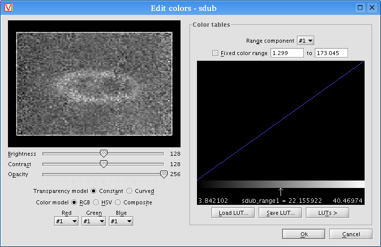

The Colors dialog box contains functions for adjusting the data's color properties. To access it, select a data object from the list within the Data controls of a display window, then click the "Colors" button. A dialog box like the following will appear:

The dialog's preview display provides a quick view of the consequences of
any color changes made. Clicking the OK button will apply those changes to the
entire dataset.
The "Constant" transparency model behaves like a layer in Photoshop, with the opacity value uniformly defining how opaque each pixel is.
The "Curved" transparency model maps a transparency curve from the minimum color value to the maximum color value, with the opacity value defining how sharply the curve arcs. An opacity of 128 (the center of the slider) is a straight line from min to max, meaning that pixels with the minimum color value are completely transparent while pixels with the maximum color value are completely opaque, with intermediate values weighted linearly. An opacity of 0 slants the line so that most pixels are nearly completely transparent unless they are at or near the maximum value, while an opacity of 256 slants the line so that most pixels are nearly opaque unless they are at or near the minimum value. (If it sounds complex, don't worry: just play with it a bit while watching the color table on the right and it will make perfect sense.)
The "Curved" model is especially useful when performing volume rendering
(see the Data settings topic for more
information on volume rendering).
VisBio will attempt to guess at good range component mappings when data is first loaded, but in some cases, adjustments may be necessary to achieve the desired visualization. In particular, when the data has more than three range components, you will probably want to choose which range components to map to which color components for greatest effectiveness.
To map a range component to a color component, choose the desired range component from the color component's drop-down menu. For example, to map intensity to Red, choose intensity from the drop-down menu labeled Red.
At times, it may be useful to fully saturate a color component, or completely empty a color component. To zero out a color component, choose None from that component's drop-down menu. To max out a color component, choose Full instead.
Lastly, when the Composite color model is selected, the range component
drop-down menus will be grayed out, since all components are mapped to
pseudocolor.
By changing brightness, contrast, range component mappings and other options, you will see the changes reflected in that range component's color table. However, complete control over each color table is available if needed. To modify a color table directly, drag the left mouse button across to the table to modify the active color component level at different range values. Click the right mouse button to cycle through active color components, from Red to Green to Blue to Alpha (opacity) and back to Red.
The "Save LUT..." button allows you to preserve the current color table for
later use, by storing it on disk as a LUT file (compatible with ImageJ). The
"Load LUT..." button reads these LUT files back in and sets the color table
accordingly. VisBio also has several preset color tables available from the
popup menu accessible with the "LUTs >" button.
Of course, it may not be the case that a particular range component conforms
to this assumption. Thus, minimum and maximum range values can be manually
specified for each range component by typing them into the appropriate text
boxes after checking the "Fixed color range" option. Alternately, VisBio will
compute these bounds automatically if "Fixed color range" is unchecked.